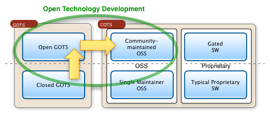

About the Codice Foundation
The origin of the Codice Foundation idea is a bit difficult to trace. However, it's been in the back of many individuals minds and hidden in the activities of many programs and projects for a long time (e.g. ARPA). In reality, the Codice Foundation is an sister to the active Mil-OSS Working Group that was formed in 2008. As a result of many events and conversations the need for an Apache-like foundation that could serve the needs of federally-focused projects (and in particular in the Defense industry) was identified. At the Mil-OSS WG4 in October of 2012, the plans for initiating Codice began to unfold. Also, with the transitioning of the Ozone Widget Framework from closed GOTS to OSS the time was right to provide a broader scope to the Mil-OSS working group - and to provide tools and support to other projects who could benefit in the same ways.
Mission Statement
The Codice Foundation is an industry-driven consortium of government, academia and industry providing infrastructure, support, education, and export control advice to communities of government-focused engineers and organizations operating open source projects.

The key intent is to facilitate Open Technology Development amongst all stakeholders, optimizing the flow of GOTS to OSS.